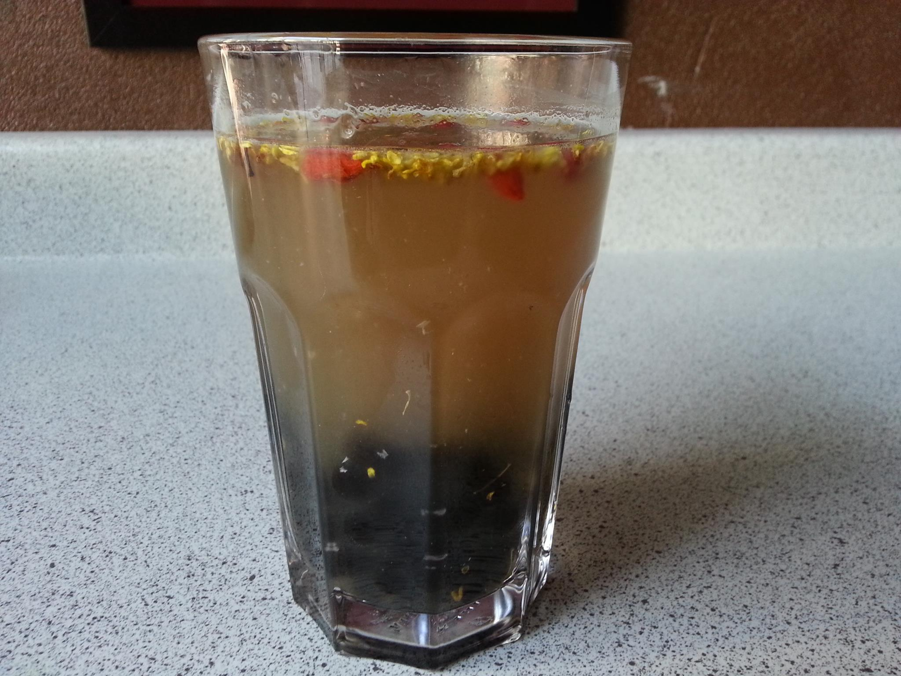
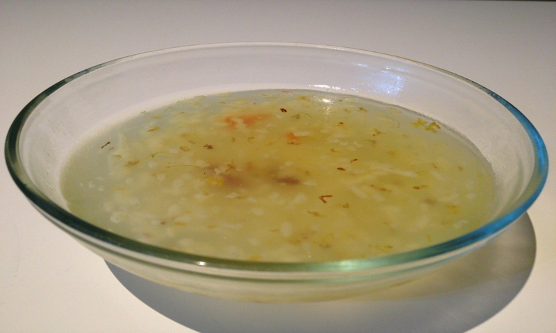

HOUSE SPECIAL:
- 
珍珠桂花米酒
RICE WINE WITH PEARL
-

CHINESE COFFEE TEA
中华咖啡红茶
中华咖啡红茶由红茶馆原始店的创始人王先生，在1937年独创，是具有浓郁咖啡香型的红茶饮料。完全不含咖啡因。
CHINESE COFFEE TEA WAS CREATED BY WANG'S FAMILY IN 1937. IT IS A BLACK TEA BASED DRINK WITH A NATURE COFFEE FLAVOR WITHOUT ANY CAFEINE.
-
祁红茶
祁红茶原产于中国安徽祁门地区。祁红茶在1917年巴拿马世界博览会上荣获金奖，因其独特的自然玫瑰香型，被誉为高贵的皇家红茶。它是世界上最好的三大红茶之一。另外两种红茶分别是印度的大吉岭红茶和斯里兰卡的锡兰红茶。
"QI HONG" BLACK TEA WAS AWARDED A GOLD MEDAL IN PANAMA INTERNATIONAL FAIR IN 1917. IT HAS CALLED "ROYAL BLACK TEA" BECAUSE OF ITS UNIQUE NATURE ROSE FLAVOR. IT IS ONE OF THE THREE MOST FAMOUS BLACK TEAS AROUND THE WORLD (THE OTHER TWO TEAS ARE DAJILING INDIA AND XILAN Sri Lanka).
- 
桂花布丁
RICE PUDDIN